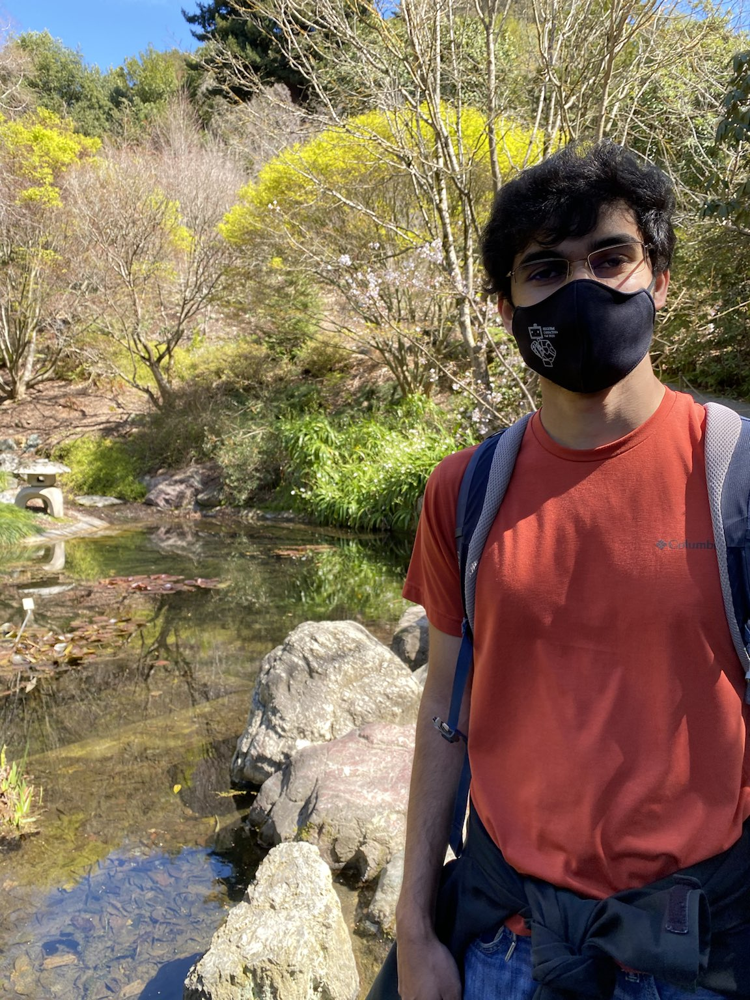

Team Bios
(a) Names and short bios of each member of your group

Neelay is a 4th year undergraduate in EECS, and hastaken courses such as EE 128, 221A/222, and
(of course)EECS 106A.
His interests are primarily related to controland motion planning

Hamza is a 4th year undergraduate in EECS. He has taken EECS106A,and EECS126. His interests in robotics are in
machine learning/ artificial intelligence and dynamically responsive, maneuverable robotic
systems with a spice of efficiency/optimization
Andrew is a 4th year undergraduate in EECS. He has taken EE 120, EE C128, and
EECS C106A. His interests in robotics are in micro-scale mobile robots.